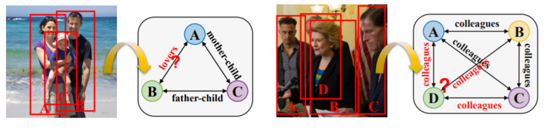
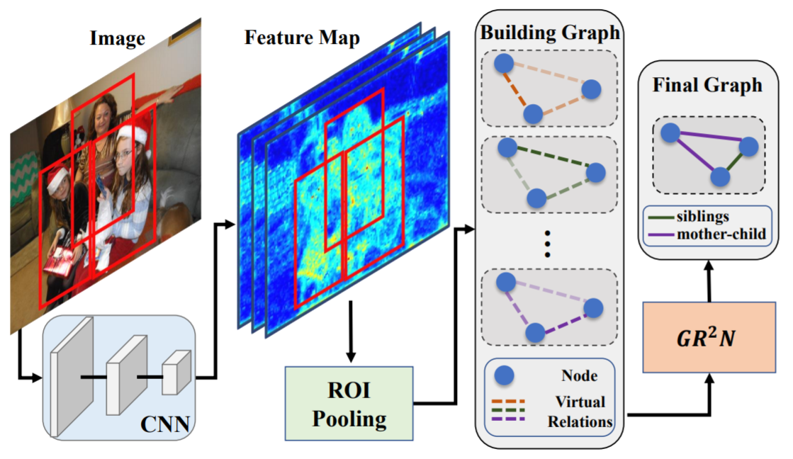

Abstract
Human beings are fundamentally sociable -- that we generally organize our social lives in terms of relations with other people. Understanding social relations from an image has great potential for intelligent systems such as social chatbots and personal assistants. In this paper, we propose a simpler, faster, and more accurate method named graph relational reasoning network (GR2N) for social relation recognition. Different from existing methods which process all social relations on an image independently, our method considers the paradigm of jointly inferring the relations by constructing a social relation graph. Furthermore, the proposed GR2N constructs several virtual relation graphs to explicitly grasp the strong logical constraints among different types of social relations. Experimental results illustrate that our method generates a reasonable and consistent social relation graph and improves the performance in both accuracy and efficiency.
Motivation

In a social scene, there are usually many people appearing at the same time, which contains various social relations. Most existing methods recognize social relations between person pairs separately, where each forward pass only processes a pair of bounding boxes on an image. However, as social relations usually form a reasonable social scene, they are not independent of each other, but highly correlated instead. Independently predicting the relations on the same image suffers from the high locality in social scenes, which may result in an unreasonable and contradictory social relation graph. To this end, we consider that jointly inferring all relations for each image helps construct a reasonable and consistent social relation graph with a thorough understanding of the social scene. Moreover, as social relations on the same image usually follow strong logical constraints, simultaneously considering all relations can effectively exploit the consistency of them. Two examples are shown above. In the first example, when we know that the relation between A and C is mother-child and that between B and C is father-child, we easily infer that A and B are lovers. In the second example, we can quickly understand the social scene through the relations among A, B, and C, and infer the relations between D and others, even if D is heavily occluded. Clearly, the relations on the same image help each other in reasoning, which is not exploited in existing methods as an important cue
Overview

An overall pipeline of our proposed method. For a given image, we first use a CNN to extract features. Then the features of people in the image are obtained from the last shared feature map using an RoI pooling layer. These features are set as the initial node embeddings. Several virtual relation graphs with shared node representations are constructed to exploit type-specific logical constraints. Finally, the proposed GR2N is used to generate a reasonable and consistent social relation graph.
Introduction Video
Citation
Bibtex
@inproceedings{li2020social,
title={Graph-Based Social Relation Reasoning},
author={Li, Wanhua and Duan, Yueqi and Lu, Jiwen and Feng, Jianjiang and Zhou, Jie},
booktitle={European Conference on Computer Vision},
pages={18--34},
year={2020},
organization={Springer}
}